Compartmental Modeling of Microparasitic Infectious Diseases Such as COVID-19
Maharshi R. Pandya, Akshay R. Kapadia
05/10/2020
With the prevalence of coronavirus, it has become more important to take decisive actions based on quantitative data. Mathematical models can help decision makers implement effective strategies to mitigate the spread of such diseases. It is important to note that these models are based on specific assumptions and therefore do not convey any clinical advice but instead provide invaluable information to administrators. This information is especially important in times like these when the dynamics of diseases such as COVID-19 are somewhat unknown.
Model Architecture:
In a simple SIR model, the total population can be divided into three compartments: Susceptible, Infected, and Recovered [1]. Differential equations can effectively explain the relationships between these compartments and provide us ways to model a dynamic system. In this article, we’ve extended the SIR model to create a SEIRDL model, in which population is divided into the following 6 compartments:
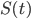 = Total susceptible population at time t
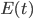 = Total population exposed to the infectant
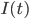 = Total infected population at time t
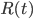 = Total recovered population at time t
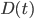 = Total deaths due to the disease at time t
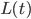 = Total population under lockdown at time t
The relationship between these compartments is depicted in the model displayed in Figure 1.
Figure 1. The SEIRDL model with each box depicting a specific compartment. Arrows pointing to the boxes indicate additions to the respective compartment and arrows pointing out of the boxes indicate removal from the respective compartments.
Model Explanation:
The change in the susceptible compartment is dependent on the rates of inflow and outflow of people per day. Total expected births in the total population is controlled by the overall birth rate for the given population. In our model, newborns are not treated differently from adults in terms of their susceptibility to the disease and therefore total newborns per day are added to the susceptible compartment. The exact nature of many infectious diseases is also not completely known. For example, it is currently not known if a single exposure to COVID-19 procures enough immunity for a recovered individual to stay healthy and not get a second infection. This is why some individuals losing their immunity from the recovered compartment are added to the susceptible compartment. The enforcement of a lockdown causes a sudden decrease in the susceptible population as most of the population is now in the lockdown compartment. While the lockdown is ongoing, the lockdown population is still being removed by natural deaths. The termination of the lockdown brings back the entire lockdown population back into the susceptible compartment. Within the susceptible population, people are removed as they die of natural causes. Upon initiation of a vaccination, the susceptible population can be thought of as being recovered and therefore directly moving from the susceptible compartment to the recovered compartment.
The force of infection defines the rate at which the susceptible population is getting exposed to a virus. Exposure to the virus moves individuals from the susceptible compartment to the exposed compartment. The virally exposed population is also being removed by natural deaths occurring within this compartment. Upon the expiration of the incubation period, the exposed individuals become infected and therefore are moved from the exposed compartment to the infected compartment. The infected population is being removed by natural deaths occurring within this compartment. In addition, infected individuals dying specifically from the infectious disease are moved to the dead compartment. Those surviving are moved to the recovered compartment. The flow of this is controlled by the rate of recovery. Within the recovered population, people dying of natural causes are removed along with people losing their immunity and becoming susceptible again. The total susceptible population receiving vaccines is moved to the recovered compartment and the flow is controlled by the rate of vaccination.
Model Parameters:
 = Birth rate (# born / day)
= Birth rate (# born / day)
 = Natural death rate
= Natural death rate
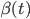 = Infection rate = the rate of transmission of the disease = 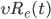
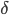 = Rate at which exposed individuals become infected = (incubation period)-1
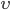 = Rate of recovery
 = Rate of death due to the disease
= Rate of death due to the disease
 = Rate at which people die = (No. of days it takes from exposure to death)-1
= Rate at which people die = (No. of days it takes from exposure to death)-1
 = Rate at which recovered individuals lose immunity and become susceptible again
= Rate at which recovered individuals lose immunity and become susceptible again
 = Lockdown (start) rate = Percent of population getting under lockdown each day
= Lockdown (start) rate = Percent of population getting under lockdown each day
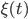 = Lockdown (end) rate = Percent of population under lockdown becoming susceptible each day
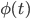 = Rate of vaccination
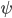 = Infectious period = 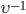
 = Force of infection = 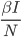, where I/N is relative proportion of the infected individuals, namely, frequency or prevalence of infection
= Force of infection = 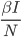, where I/N is relative proportion of the infected individuals, namely, frequency or prevalence of infection
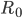 = Basic reproduction number = average secondary infections produced by an infected individual = constant for a disease
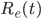 = Effective reproduction number at time t
Based on the model depicted in Figure 1 and the set of variables controlling the relationships between various compartments, a first-order linear equation can be written for each of the compartments.
Model Equations
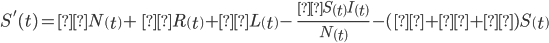 | (1) |
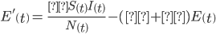 | |
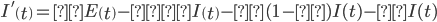 | |
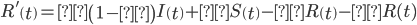 | |
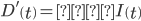 | |
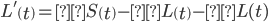 | |
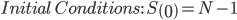, 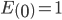, , , 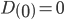, |
Model Assumptions
Infectious diseases are assumed to be transferred between individuals via contact and are assumed to be contagious. While individuals of different age and different health histories might be more susceptible to catch the disease or survive the disease, in this model, we assume that everyone has an equal chance of acquiring the infection. The percent of recovered individuals in the population that lose immunity to the virus and become susceptible again are not known. If the disease is prone to only confer short-term immunity in most individuals, the model might not accurately predict the course of infection. Asymptotic individuals are assumed to carry the infection and are placed in the Exposed compartment until the incubation period expires. Finally, the disease is thought to be an acute illness with a relatively short recovery period (the infection won’t last for months).
Reproduction Numbers ( and 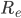):
Reproduction number is an important quantity in epidemiological models. The reproduction number gives us an outlook of the average number of secondary infections that are produced among susceptible populations by one infected individual. While the basic reproduction number, , remains constant for a disease, the effective reproduction number can vary over the course of the pandemic. The time-dependent value of can be determined using the following equation which is heavily used in literature [2]:
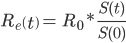 | (2) |
For infectious diseases such as the coronavirus to persist in a population, the reproduction number must exceed 1, suggesting that the infected individual, on average, produces more than one secondary infection. On the contrary, for an infectious disease to slowly die out over time, the value of the reproduction number must stay below 1. With this in mind, it’s very easy to see in Equation 2 that the most effective way to reduce the effective reproduction number is to reduce the total susceptible population at time t. This can be achieved by implementing strict lockdowns or stay-at-home orders.
Modeling COVID-19
Now that we have the basics epidemiological models understood, let’s plugin sample data into our model and gather some insights.
In the United States, there are ~11.8 births per 1,000 population in a year. This means that the daily birth rate, , is taken to be 11.8/365,000 [3]. There are also 863.8 natural deaths occurring in the United States each year per 100,000 population resulting in a daily natural death rate, , of 863.8/36,500,000 [4].
For this sample data, let’s assume that the infectious period is  days and the incubation period of the virus is 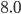 days. The basic reproduction number is still not determined for COVID-19, however, in this model, we have used 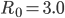. Based on the data from JHU’s COVID-19 data, the mortality rate due to COVID-19 in the United States is 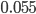, however, this value might vary in different places [5]. Among the deaths occurring due to COVID-19, the number of days to death from infection is taken to be 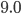 days. Let’s also assume that about 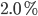 of the recovered individuals are losing immunity and again becoming susceptible to the virus.
days and the incubation period of the virus is 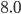 days. The basic reproduction number is still not determined for COVID-19, however, in this model, we have used 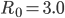. Based on the data from JHU’s COVID-19 data, the mortality rate due to COVID-19 in the United States is 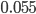, however, this value might vary in different places [5]. Among the deaths occurring due to COVID-19, the number of days to death from infection is taken to be 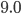 days. Let’s also assume that about 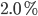 of the recovered individuals are losing immunity and again becoming susceptible to the virus.
1. Worst-case Scenario.
In the worst-case scenario, it is assumed that no preventive measures such as lockdowns, social distancing or vaccinations are implemented at all. In this case, let us use the same parameters described above and keep the lockdown implementation rate, lockdown termination rate, and vaccination rate to be zero. With these parameters, we will model the outbreak for a population of 170,000 without any large-scale lockdowns or vaccinations.
Figure 2. Worst-case scenario for a COVID-19 like disease for a population of 170,000 with the following parameters: UInput(170_000, 3.0, 4, 8,0.055, 9, 0.02, 0, 0, 0, 0, 0, 0).
The worst-case scenario modeled by inputting the sample data results in Figure 2, with more than 10,000 individuals having the infection on a single peak day. Again, note that this is a worst-case scenario and very unlikely to happen in the real-world.
2. Waves of Infections with a need for Multiple Spaced Out Lockdowns.
Waves of infectious diseases are common and are seen in the regular flu cycle. The waves persist in the population for at least until an effective vaccine for a given strain of the virus is implemented at a large-scale within the population [6]. However, without a successful implementation of the vaccine, waves of infection are a real possibility. As seen in the 1918 pandemic, the pandemic not only had repeated waves but the second wave was actually way worse than the first one.
By the end of April, the effective reproduction number of COVID-19 for many states in America started to fall below one. This allowed many decision makers to reopen their communities. However, as clearly seen in our model, the second wave of the COVID-19 is very much possible. With excessive interactions in this latent period of relaxed restrictions along with the start of the regular flu season in the Fall, it is very important to prepare for the second wave of COVID-19.
Now let’s assume that the lockdown for a population of 170,000 starts on day 50 and lasts for 100 days. The first lockdown effectively flattens the first peak, however, as seen in Figure 3, the second peak is almost inevitable. Without any type of secondary lockdown, vaccination or any other preventive measures, the second peak is expected to be much bigger with a much higher peak of infected individuals than the original peak. This is a direct result of not implementing any lockdowns during the second wave. If no preventive measures are taken during the second wave, our model predicts that the second wave will be more destructive than the initial wave.
Figure 3. The first peak of the outbreak is effectively flattened by lockdown implementation on Day 50, which lasts for 100 days. No further preventive measures are taken following a single lockdown. UInput(170_000, 3.0, 4, 8, 0.055, 9, 0.02, 50, 150, 0.5, 0.9, 0, 0)
We can also model implementation of preventive measures during the second wave by simply assuming that vaccination will start in the middle of the second-wave. To keep the model simple, no secondary lockdown compartment is included but the implementation of vaccine (discussed in a later section) should produce very similar results. We will simply assume that the vaccination started on day 260 at 70% rate. This will flatten out the second peak allowing us to easily compare the two peaks in the Figure 4. Overall, preventive measures are needed to significantly flatten the second peak in comparison to the second peak in Figure 3.
Figure 4. First peak of the outbreak is flattened by implementing the lockdown on Day 50, which lasts for 100 days. To easily visualize both peaks in one diagram, 70% vaccination implementation on Day 260 is included, which has an overall effect of flattening the second peak.
UInput(170_000, 3.0, 4, 8, 0.055, 9, 0.02, 50, 150, 0.5, 0.9, 260, 0.7)
From this analysis, it is clear that a second wave of infection for COVID-19 is likely to occur. When the cases of infection start to increase again after the extended period of relaxation, it is recommended to reinstate preventive measures as early as possible. In summary, our model suggests that implementation of multiple spaced out lockdowns will be necessary to take into account for the repeated waves of infection until an effective vaccine is given to the susceptible population at a large-scale.
3. Importance of an Early Lockdown
As the coronavirus spread across many countries, we saw some places such as Wuhan, China, implement some of the earliest lockdowns. On the other hand, countries like Italy and Spain lacked an early implementation of a strict lockdown. Through our model, we will try our best to explain the importance of an early lockdown.
In Equation 1, variables  and 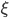 are listed as constants for simplicity, however, the exact definitions are as follows:
and 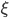 are listed as constants for simplicity, however, the exact definitions are as follows:
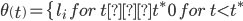 | (3) |
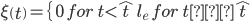 |
Where 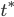 is the first day of the lockdown and 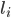 is the percent of population that begins following the lockdown starting at day and onwards. 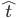 denotes the first day when the lockdown is eased and 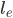 is the percent of the population that starts coming back to the susceptible compartment starting day and onwards. Also, note that 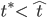.
The time-dependent values of and allows us to see the importance of an early lockdown by changing the lockdown start day (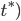, lockdown end day (), and percent implementation of both lockdown implementation () and lockdown easing ().
In Figure 2, we investigated the worst-case scenario, in which, the peak has around 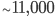individuals getting infected on a single day. Now, if lockdown is implemented on 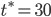, we can see, in Figure 5, that the original peak is so small on the vertical axis that it is almost unidentifiable. This is because our model doesn’t account for any implementation of lockdown during the second-wave of the disease.
Figure 5. The primary lockdown of 40 days is implemented in a population of 170,000 starting Day 30. The first peak is very tiny in comparison to the second and the third peak. UInput(170_000, 3.0, 4, 8,0.055, 9, 0.02, 30, 70, 0.5, 0.9, 0, 0)
To alleviate this problem, we will assume that all of the population is removed from being susceptible by the lockdown end day. This can be easily achieved by setting the vaccination start day to be the same as the lockdown end day and setting the vaccination rate to 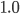 (discussed in later sections). This results in Figure 6, which clearly shows that if the lockdown is implemented on with and terminated on with then there will be about infections on the peak day.
Figure 6. The primary lockdown of 40 days is implemented in a population of 170,000 starting on Day 30. To easily visualize the size of the primary peak, we set the vaccination start day to be the same as the lockdown termination day (70). This effectively removes any future waves of infection allowing us to focus on the first wave only.
UInput(170_000, 3.0, 4, 8,0.055, 9, 0.02, 30, 70, 0.5, 0.9, 70, 1)
Now, if the lockdown period is delayed by just 15 days, we can see drastic changes in the number of individuals getting infected o. As seen in Figure 7, with the lockdown implemented on with and terminated on with , there will be about infections on the peak day.
Figure 7. The primary lockdown of 40 days is implemented in a population of 170,000 starting on Day 45. To easily visualize the size of the primary peak, we set the vaccination start day to be the same as the lockdown termination day (85). This effectively removes any future waves of the infection allowing us to focus on the first wave only.
UInput(170_000, 3.0, 4, 8,0.055, 9, 0.02, 30, 70, 0.5, 0.9, 70, 1)
In summary, a 40 day long lockdown period starting on day has only individuals getting infected on the peak day (Figure 6), the same length lockdown period starting on day has only individuals getting infected on the peak day (Figure 7) and the scenario with no lockdown in place has more than individuals getting infected on the peak day (Figure 2). From this analysis, it is clear that an early and stricter implementation of a lockdown has a strong impact on reducing the total population from being infected. In all of these figures, it is important to pay attention to the changing scales on the vertical axis.
4. Loss of Immunity in the Recovered Population:
As we discussed in the Model Description section, the real-world dynamics of infectious diseases can be hard to determine. At first, COVID-19 was believed to be similar to other RNA viruses such as SARS and MERS, and therefore the recovered individuals were believed to gain permanent immunity from the disease [7]. However, new data published by the WHO suggest that some individuals may lose immunity after recovering from COVID-19 [8].
The permanent immunity case can be modeled by setting in our model along with the same parameters as those used in Figure 7, but no vaccination implemented. In the resulting Figure 8, we have a very small primary peak and a much larger secondary peak.
Figure 8. The primary lockdown of 40 days is implemented in a population of 170,000 starting on Day 30. The primary peak is very small in comparison to the secondary peak. However, due to , there is no tertiary peak. UInput(170_000, 3.0, 4, 8,0.055, 9, 0.0, 30, 70, 0.5, 0.9, 0, 0).
Now, let’s assume that about of the recovered population loses immunity after recovering. In this case, setting results in a tertiary peak, following a large secondary peak, as seen in Figure 9:

Figure 9. The primary lockdown of 40 days is implemented in a population of 170,000 starting on Day 30. The primary peak is very small in comparison to the secondary peak. Setting results in a tertiary peak. UInput(170_000, 3.0, 4, 8,0.055, 9, 0.02, 30, 70, 0.5, 0.9, 0, 0)
Note that while in Figure 8 the total infected population eventually levels to zero, in the re-susceptibility case, Figure 9, it is much harder to bring the peak down to zero and therefore, the re-susceptibility scenario might demand very different preventive approaches from the decision makers. While researchers are learning more about COVID-19 every day, early recognition of the dangerous scenarios in which large parts of the recovered population become susceptible again is very important.
5. Vaccination Implementation Modeling:
Starting in early March, we have been hearing a lot about the necessity of effective vaccines to fight COVID-19. However, as experts suggest, it is very important for each developed vaccine prototype to undergo randomized controlled trials to determine its validity and reliability. While the researchers are trying to safely accelerate the timeline, the actual large-scale vaccination is still believed to initiate in January at best [9].
Again, in Equation 1, variable  is listed as a constant for simplicity, however, we can model the impact of the vaccination by first defining as time-dependent as shown below:
is listed as a constant for simplicity, however, we can model the impact of the vaccination by first defining as time-dependent as shown below:
(4) |
Where  is the first day the vaccination begins and
is the first day the vaccination begins and  is the percent of the population that begins receiving the vaccine starting on day and onwards.
is the percent of the population that begins receiving the vaccine starting on day and onwards.
As seen in Equation 4, the impact of is null before the given start day of vaccination (), however, after day , a part of the individuals in the susceptible population are moved to the recovered compartment each day.
In Figure 4, we saw the impact of a 70% vaccination starting on day . In this case, there were close to 1,200 cases on the secondary peak day. The timing of the vaccination during the secondary peak is also very important. With no lockdown in place, if the vaccination is delayed by just 10 days, our model expects close to 3,500 new infection cases by the secondary peak day.
Figure 10. First peak of the outbreak is flattened by implementing a lockdown on Day 50, which lasts for 100 days. During the second wave, 70% vaccination is implemented on Day 260 and onwards. UInput(170_000, 3.0, 4, 8, 0.055, 9, 0.02, 50, 150, 0.5, 0.9, 270, 0.7).
If vaccines are given to the population at a large-scale, the susceptible population can be quickly moved to the recovered compartment. This will effectively break further waves of the infection including eliminating the secondary peak seen in Figure 10. Let us use the same parameters as Figure 10, except change from to and model the early vaccination scenario.The results are depicted in Figure 11 below.
Figure 11. First peak of the outbreak is flattened by implementing lockdown on Day 50, which lasts for 100 days. During the second wave, 70% vaccination is implemented on Day 200 and onwards. UInput(170_000, 3.0, 4, 8, 0.055, 9, 0.02, 50, 150, 0.5, 0.9, 200, 0.7).
While it is obvious, we can see from our model that an early implementation of the vaccination will have the largest and most significant impact on fighting COVID-19 like infectious diseases. This includes flattening the secondary peak if implemented at the right time, reducing mortalities, and stopping repeated waves of infection.
Discussion about modeling parameters:
This quote from the famous statistician, George Box, is pretty relevant in interpreting scientific models: “All models are wrong but some are useful”. The main purpose of scientific models, such as the one presented here, is not to exactly predict the epidemic but to provide one scientific perspective to help decision makers as well as those of us stuck in the quarantine to make sound decisions on what to do next.
By changing the model parameters, it is easy for us to see how the predictions of the model change. This also shows us the value of the accurate input data, which is what all scientific models are dependent on to produce valid results. In the real-world, thousands of different variables may contribute to the exact dynamics of COVID-19, but here we only analyze a few of those variables. While the exactness of these models can be argued, the insights gathered from them are pretty robust in these times of uncertainty.
First and foremost, early and strict lockdowns have the biggest impact in lowering the effective reproduction number and therefore, reducing the total population from getting infected. Second, it is important to not ignore second waves of the infection as they may cause more damage if preventive measures are not placed early in the second wave. And at last, an early and safe implementation of vaccines is considered to play the biggest role in both flattening the infection curve and preventing future waves of infection.
References:
Edelstein-Keshet, Leah. Mathematical models in biology. Society for Industrial and Applied Mathematics, 2005.
Cintrón-Arias, Ariel, et al. "The estimation of the effective reproductive number from disease outbreak data." arXiv preprint arXiv:2004.06827 (2020).
https://www.cdc.gov/nchs/fastats/births.htm
https://www.cdc.gov/nchs/fastats/deaths.htm
https://coronavirus.jhu.edu/
Fox, Spencer J., Joel C. Miller, and Lauren Ancel Meyers. "Seasonality in risk of pandemic influenza emergence." PLoS computational biology 13.10 (2017).
Raoult, Didier, et al. "Coronavirus infections: Epidemiological, clinical and immunological features and hypotheses." Cell Stress 4.4 (2020): 66.
WHO/2019-nCoV/Sci_Brief/Immunity_passport/2020.1
Le, T. Thanh, et al. "The COVID-19 vaccine development landscape." Nat Rev Drug Discov (2020).
Sameni, Reza. "Mathematical modeling of epidemic diseases; a case study of the COVID-19 coronavirus." arXiv preprint arXiv:2003.11371 (2020).
Daughton, Ashlynn R., et al. "An approach to and web-based tool for infectious disease outbreak intervention analysis." Scientific reports 7 (2017): 46076.
Henri Froese. Infectious Disease Modelling: Beyond the Basic SIR Model.
https://towardsdatascience.com/infectious-disease-modelling-beyond-the-basic-sir-model-216369c584c4